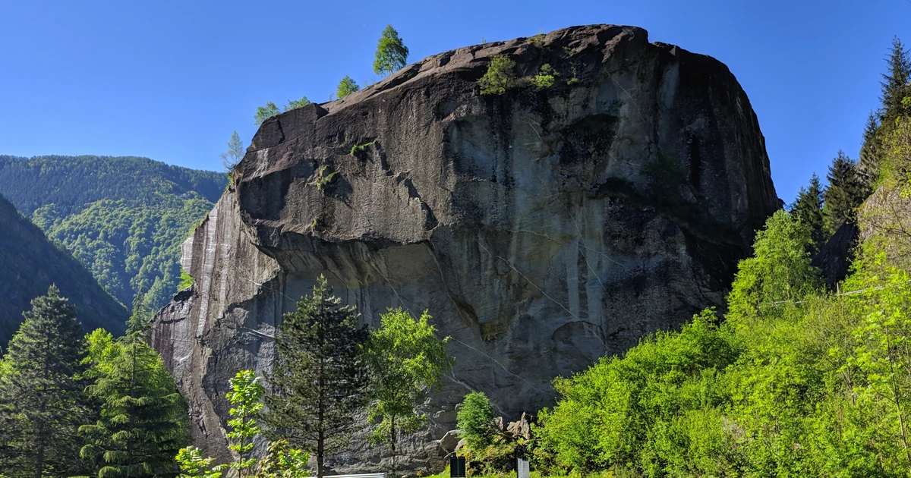

Climbing in Valtellina
Introduction
Valtellina is a long alpine valley located in the far north of Italy, bordering Switzerland. It is approximately two hours by car or train from Milan, which serves as the main international travel hub. The valley offers a wide range of mountain sports, yet it remains largely undocumented for non-Italian visitors.
Climbing in Valtellina ranges from technical granite slab climbing to steep limestone walls, with sport, traditional, and long multi-pitch routes available. Most climbing areas lie within one hour’s drive from the main town of Sondrio and are far less crowded than more famous destinations such as the Dolomites or the Mont Blanc massif.
In this guide, climbing in Valtellina is divided into different areas, each described separately.

Area 1: Val Masino and Val di Mello
This is the true jewel of climbing in Valtellina and by far the most famous area. Val di Mello is a side valley branching off from Valtellina and is renowned for its exceptional granite. It is often referred to as “Little Yosemite” or the “University of Granite”.
Italian bouldering was born here in the late 1970s, when a group of local climbers began climbing short routes without ropes simply for fun — a radical departure from the summit-oriented alpinism typical of that era.
Over the years, bouldering developed rapidly and eventually led to Melloblocco, an international bouldering festival that has hosted climbers such as Adam Ondra, Stefano Ghisolfi, and Alexander Megos. While bouldering remains central to the area, Val di Mello also offers extensive sport climbing, traditional routes, and long big-wall style climbs.
After the pandemic, Melloblocco was suspended for a few years. Local authorities, concerned about environmental impact and increasing tourist pressure, chose to limit large-scale events. Today, Melloblocco still exists, but in a smaller and more environmentally conscious form.
Climbing ethics in Val di Mello are particularly strong. Long routes generally require solid traditional skills, with very few bolts in place. Many belays are built using removable gear, and historical routes have been preserved exactly as they were first climbed. The guiding principle is clean climbing: leaving as little permanent metal on the rock as possible.
Climbing typically takes place around 1,000 m altitude. The most pleasant seasons are spring through autumn, with October and November offering especially beautiful colors.


Sasso Remenno

https://27crags.com/crags/sasso-remenno-25976
For sport climbing, Sasso Remenno is the place to visit. This massive cubic block of granite lies on the valley floor at around 800 m altitude and looks almost like a meteorite fallen from the sky. Standing roughly 50 m high with a volume exceeding half a million cubic meters, it is considered the largest freestanding monolith in Europe.
The granite is characterized by predominantly horizontal erosion features, allowing for technical climbing on edges of varying sharpness. On smoother, overhanging sections that would otherwise be unclimbable, artificial pockets, edges, and sloping holds have been added to allow progression. Here, climbing becomes more athletic, requiring short bursts of pure power and strength, with bouldery cruxes that are often difficult to solve on sight.
The most popular face is the south wall, which hosts a large number of moderate routes ranging from grade 4a to 6b. The west face is particularly suitable for beginners, with routes starting at grade 2c. The north and northeast faces are the most demanding and enjoyable, featuring steep and partially artificial routes reaching up to grade 8c — the first 8c ever proposed in Italy.
The surrounding area is also scattered with countless boulders and several smaller crags.
Long routes
Deeper inside Val di Mello, the valley splits into two branches, one of which continues as Val Masino. This area is especially known for long, historical routes of outstanding beauty.
Most long routes here are very sparsely bolted and often involve delicate slab climbing with limited protection options. A small number of newer multi-pitch routes have been bolted more generously and can be climbed almost in a sport-climbing style.
Grades typically range from UIAA IV to VIII. Descriptions of some of the most famous routes in English can be found here: https://www.planetmountain.com/en/routes/climbing-routes?parola=mello


Bouldering
Bouldering is where climbing in Val Masino and Val di Mello truly began. The area hosts roughly 2,400 boulders spread throughout the valley and generally in excellent condition. There is something for everyone: around 400 problems up to grade 5c, approximately 1,800 problems between 6a and 7c, and more than 200 problems from 8a upward.
Each year, the Melloblocco bouldering event combines climbing with workshops, courses, and talks led by top international athletes — and, of course, a large celebration at the end.
More information about Melloblocco: https://www.melloblocco.it/


Area 2: Bormio and Surroundings
Bormio is a small town located at 1,200 m altitude, about one hour by car from Sondrio. Especially in summer, this area offers ideal climbing temperatures, often staying between 20 and 25°C.
Crap de Scegn
One of the main sport-climbing areas in the region, with around 150 bolted routes ranging from 4a to 8b. The climbing style here is very different from Val di Mello, being steeper and more physical.


An English PDF guide is available here: https://www.valdidentroturismo.it/media/allegati/01/019/ci/files/pieghevole-falesia.pdf
Migiodo
Located in Sondalo, about 20 minutes from Bormio and 40 minutes from Sondrio. The crag receives little sun in summer, making it ideal during hot periods.
The rock is gneiss, with routes from 4a to 8a and a predominantly technical style. There is also a sector suitable for children and beginners.


Sasso dei Contrabbandieri
Located in Cancano, near Bormio, along a scenic road leading to historic fortified towers built in 1391.
This limestone wall sits at around 1,900 m altitude with a southern exposure. Climbing takes place mainly on slabs interspersed with vertical sections. Routes were first established in the 1980s and are generally well protected, making the area suitable as an introduction to harder sport climbing in the region.
Due to nesting birds of prey, climbing is usually prohibited until the end of May. The exact dates vary from year to year, so always check local notices or park authority information.


Area 3: Valmalenco
North of Sondrio, Valmalenco leads toward the highest peaks of the eastern Alps, including Piz Bernina (4,048 m). The valley is best known for classic alpine routes, but it also offers excellent sport climbing and long routes, especially in summer when climbing typically takes place around 2,000 m altitude.
Campo Moro
A road leads high into Valmalenco to the artificial lake and dam of Campo Moro. The area offers options for sport climbing, traditional routes, and well-bolted multi-pitch climbs.
The “Pareti dello Zoia” is a historic crag with very steep and demanding routes, best suited to experienced climbers. For most visitors, Campo Moro itself is ideal, with many well-bolted routes from 5a to 7a. Fixed anchors are generally present, though a few friends can be useful for additional protection.


A complete PDF guide (also in English) is available here: https://www.in-lombardia.it/sites/default/files/focus/attachments/132745/valmalenco_opuscolo_arrampicata.pdf
Area 4: Sondrio and Surroundings
Climbing is also possible close to Sondrio, with crags ranging from 300 m to 1,300 m altitude depending on the season.
Sassella
Just 10 minutes from the city center, Sassella is located below the vineyards. While the nearby road reduces the wilderness feel, the crag offers many routes and even some multi-pitch climbs, making it ideal for training and quick sessions. A short via ferrata is also present.
Crap de la Nona
Located at around 1,300 m altitude and north-facing, this relatively new crag (bolted in 2019) is perfect for summer climbing. The climbing style is physical, with overhanging walls, cracks, and technical sections. Around 50 routes are currently available.
Other Areas Outside Valtellina
Lecco and Lake Como
Between Milan and Valtellina lies Lake Como, where limestone climbing is extremely popular. Many routes are steep and physical, and some crags face directly over the lake. The area hosts countless sport crags and long multi-pitch routes, with a character reminiscent of the Dolomites.


Albigna (Switzerland)
On the Swiss side of Val Masino, the Albigna area offers high-altitude granite climbing, accessible only in summer. The rock quality is exceptional, and routes such as La Fiamma are considered true classics.


WORK IN PROGRESS